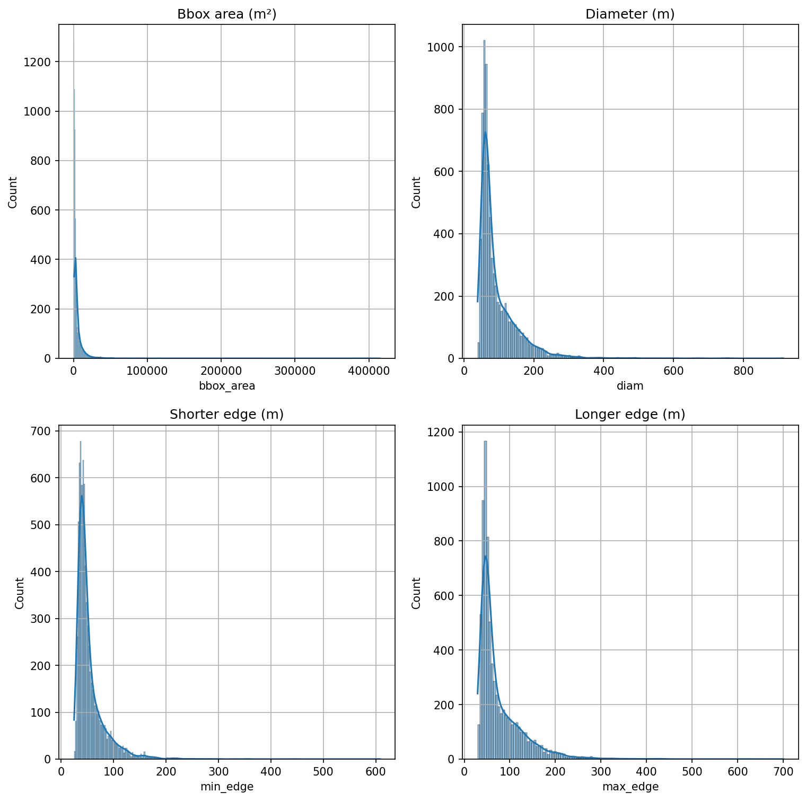

import warningswarnings.filterwarnings("ignore")import rasterio as rioimport rasterio.plot as rio_plotimport matplotlib.pyplot as pltimport osfrom pathlib import Pathimport numpy as npimport geopandas as gpdimport pandas as pdfrom shapely.geometry import Pointimport shapelyimport seaborn as sns
Satellite data
Mostly cloudless Sentinel 2 mosaics were acquired from Copernicus Open Access Hub as L1C products, which were then converted to RGB mosaics with similar color corrections that are used in Tarkka service.
The following mosaics were used as the training and validation data:
We manually annotated all visible boats and ships from the RGB satellite mosaics from 15 Sentinel 2 products by drawing a bounding box around them, and saved them into shapefiles so that each shapefile corresponded to a single RGB mosaic. These data cover five separate grid tiles, and each grid tile was annotated from three separate time periods in order to capture more diverse conditions in the sea and different cloud coverage. Images from multiple acquisition dates were also used to identify smaller boats: As these boats only cover a couple of pixels, the identification was done by comparing several images and if a potential boat was not present in all images, it was annotated. The grid tiles were split into train, validation and test sets so that training and validation set contained 3 tiles and test set contained 2 tiles. The training and validation sets were further split into five equal sized folds
As it is easier to just leave id empty in QGIS, add the information to shapefiles.
Code
image_path = Path('../data/rgb_mosaics/')shp_path = Path('../data/annotated_ships')for t_id in ['34VEM', '35VLG', '34WFT', '34VEN', '34VER']: mosaics = [f for f in os.listdir(image_path/t_id) if'tif'in f]for t in mosaics: ships = gpd.read_file(shp_path/t_id/t.replace('tif', 'shp')) ships['id'] ='boat' ships.to_file(shp_path/t_id/t.replace('tif', 'shp'))
Plot log-scaled histograms for bounding box area, diameter, shorter edge and longer edge.
Code
fig, axs = plt.subplots(2,2, dpi=150, figsize=(12,12))for a in axs.flatten(): a.grid(True)sns.histplot(all_ships.bbox_area, log_scale=False, ax=axs[0,0], kde=True).set_title('Bbox area (m²)')sns.histplot(all_ships.diam, log_scale=False, ax=axs[0,1], kde=True).set_title('Diameter (m)')sns.histplot(all_ships.min_edge, log_scale=False, ax=axs[1,0], kde=True).set_title('Shorter edge (m)')sns.histplot(all_ships.max_edge, log_scale=False, ax=axs[1,1], kde=True).set_title('Longer edge (m)')plt.show()

Bounding box area
As most of the annotations cover also most of the wake of the marine vessel, the bounding boxes are significantly larger than a typical boat. There are a few annotations larger than 100 000 m², which are either cruise or cargo ships that are travelling along ordinal directions instead of cardinal directions, instead of e.g. smaller leisure boats.
Code
all_ships.bbox_area.describe()
count 7580.000000
mean 5606.196180
std 11257.347462
min 753.937852
25% 1717.994773
50% 2493.311793
75% 5627.926638
max 414795.692722
Name: bbox_area, dtype: float64
Diameter
Annotations typically have diameter less than 100 meters, and the largest diameters correspond to similar instances than the largest bounding box areas.
Code
all_ships.diam.describe()
count 7580.000000
mean 95.646706
std 60.292898
min 39.061896
25% 59.296477
50% 72.101897
75% 113.827438
max 913.890352
Name: diam, dtype: float64
Aspect ratio
Aspect ratio measures the ratio of the bounding boxes width to its height. Ratios close to 1 (\(10^0\)) mean near-square bounding boxes, ratios less than 1 correspond to boxes whose height is larger than width, and ratios larger than 1 correspond to boxes with height less than width. Overall the distribution of aspect ratios looks quite normal, and most boxes are either square or close to it.
drone_detector package provides utilities for converting geospatial data to formats accepted by different deep learning frameworks. In this work, YOLOv8 is used as the detection model, so the data must be converted to YOLO format.
First step is to tile the data into smaller patches. drone_detector.processing.tiling.Tiler does this. Then data is converted to YOLO specifications with drone_detector.processing.yolo.YOLOProcessor.
Code
from drone_detector.processing.tiling import Tilerfrom drone_detector.processing.yolo import*
We need to specify some datapaths, tilesize (here 320x320px) and overlap (here (0,0)).
yaml-file that defines the datasets is still a work in progress so we need to do it manually. Folder format is the following:
processed-|
|tile_id|
|date-|
| |-images # patches as 320x320px tif files
| |-labels # annotations in yolo format
| |-vectors # annotations in geojson format
| |yolo.yaml # yaml file for yolo dataset for this folder
...
|yolo.yaml # we need this file to have both folders in a single dataset
|train.txt
|val.txt
From these tiles, split them into five equal sized folds so that:
All folds contain data from all timesteps and locations
All patches in both sets are unique to prevent data leakage
All patches that contain a boat in any timestep are taken into account
Some patches without annotations are then in both sets
Code
import randomrandom.seed(123)patch_ids_34VEM = [t[:-4] for t inset().union(*(os.listdir(outpath/'34VEM/20220619/labels'), os.listdir(outpath/'34VEM/20220721/labels'), os.listdir(outpath/'34VEM/20220813/labels')))]patch_ids_35VLG = [t[:-4] for t inset().union(*(os.listdir(outpath/'35VLG/20220606/labels'), os.listdir(outpath/'35VLG/20220626/labels'), os.listdir(outpath/'35VLG/20220721/labels')))]patch_ids_34WFT = [t[:-4] for t inset().union(*(os.listdir(outpath/'34WFT/20220627/labels'), os.listdir(outpath/'34WFT/20220712/labels'), os.listdir(outpath/'34WFT/20220828/labels')))]ixs_34VEM =list(range(0, len(patch_ids_34VEM)))random.shuffle(ixs_34VEM)folds_34VEM = [patch_ids_34VEM[i::5] for i inrange(5)]ixs_35VLG =list(range(0, len(patch_ids_35VLG)))random.shuffle(ixs_35VLG)folds_35VLG = [patch_ids_35VLG[i::5] for i inrange(5)]ixs_34WFT =list(range(0, len(patch_ids_34WFT)))random.shuffle(ixs_34WFT)folds_34WFT = [patch_ids_34WFT[i::5] for i inrange(5)]for i inrange(5):withopen(outpath/f'fold_{i+1}.txt', 'w') as dest:for j in folds_34VEM[i]: dest.write(f'{os.path.abspath(outpath)}/34VEM/20220619/images/{j}.tif\n') dest.write(f'{os.path.abspath(outpath)}/34VEM/20220721/images/{j}.tif\n') dest.write(f'{os.path.abspath(outpath)}/34VEM/20220813/images/{j}.tif\n')for j in folds_35VLG[i]: dest.write(f'{os.path.abspath(outpath)}/35VLG/20220606/images/{j}.tif\n') dest.write(f'{os.path.abspath(outpath)}/35VLG/20220626/images/{j}.tif\n') dest.write(f'{os.path.abspath(outpath)}/35VLG/20220721/images/{j}.tif\n')for j in folds_34WFT[i]: dest.write(f'{os.path.abspath(outpath)}/34WFT/20220627/images/{j}.tif\n') dest.write(f'{os.path.abspath(outpath)}/34WFT/20220712/images/{j}.tif\n') dest.write(f'{os.path.abspath(outpath)}/34WFT/20220828/images/{j}.tif\n')